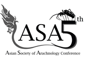

The Asian Society of Arachnology (ASA) invites you to join us at the 5th ASA conference at Chulalongkorn University (CU), Bangkok, Thailand.
The conference will be held during the 19th –22nd November 2018 in one of Thailand prestigious research institutions, Chulalongkorn University in the city of Bangkok—the capital and most populous metropolitan, which ranked among the world top tourist destinations.
The conference venue will be hosted at the Montein Hotel Bangkok located near CU beautiful main campus with accessibility to major public transports connecting to most main tourist attractions, accommodations, and food venues in Bangkok. Two plenary prominent speakers will be giving lectures on their works and findings—Dr. Robert J. Raven from Queensland Museum, Australia (mygalomorph spiders) and Dr. Deborah R. Smith from University of Kansas, USA (social spiders).
A one-day excursion will bring you to King Mongkut’s University of Technology Thonburi (KMUTT), Ratchaburi campus with a landscape that covered with primary and secondary dipterocarp forest and adjacent to the border of Myanmar.
We look forward to welcoming you in November 2018 in Bangkok!
Best Regards,
Conference Organizers : Chaowalit Songsangchote, Wimolwan Chotwong, Prapun Traiyasut and Natapot Warrit
International Scientific Committee : Ono Hirotsugu, Peter Jaeger, Joseph Koh, Peter Schwendinger, Emma Shaw, and Li Shuiqian
